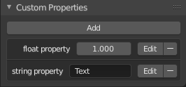
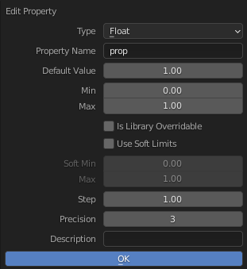

Custom Properties¶

Panel Custom Properties.¶
Custom property là cách để lưu dữ liệu riêng của bạn vào các data-block của Blender. Nó có thể được dùng cho rigging (nơi bone và object có thể có custom property điều khiển các thuộc tính khác), và cho script Python, nơi việc định nghĩa các cài đặt mới không có sẵn trong Blender là chuyện thường thấy. Cũng có thể truy cập custom property từ material qua Attribute Node.
Chỉ một số dữ liệu nhất định hỗ trợ custom property, chẳng hạn:
Tất cả các loại data-block.
Bone, pose bone và edit bone.
Sequence strip.
Để thêm một custom property, hãy tìm panel Custom Properties, nằm ở dưới cùng của hầu hết các vùng Properties hoặc Sidebar, rồi nhấp New. Property có thể được xóa ngay tại vị trí đó bằng biểu tượng xóa. Sau khi property đã được thêm, chúng có thể được cấu hình qua biểu tượng chỉnh sửa để phục vụ một trường hợp sử dụng cụ thể; xem Editing Properties để biết thêm thông tin.
Chỉnh sửa Property¶
Giao diện người dùng¶

Pop-up chỉnh sửa Custom Properties.¶
Custom property có thể được chỉnh sửa bằng panel có sẵn cho những loại dữ liệu hỗ trợ nó. Việc chỉnh sửa property cho phép bạn cấu hình những thứ như giá trị mặc định, dải giá trị, và thậm chí thêm tooltip tùy chỉnh.
- Type
Kiểu dữ liệu của property; mỗi kiểu dữ liệu khác nhau chỉ có thể có những thuộc tính dữ liệu cụ thể riêng.
- Float:
Một giá trị số có phần thập phân, ví dụ 3.141, 5.0, hay 6.125.
- Float Array:
Một tập hợp gồm nhiều giá trị kiểu float, ví dụ
[3.141, 5.0, 6.125]. Kiểu dữ liệu này cũng có thể được dùng cho dữ liệu có thể biểu diễn dưới dạng mảng float như màu sắc. Các mảng float đặc biệt này có thể được đặt trong bộ chọn Subtype.- Integer:
Một giá trị số không có phần thập phân, ví dụ 1, 2, 3, hay 4.
- Integer Array:
Một tập hợp gồm nhiều giá trị kiểu integer, ví dụ
[1, 2, 3, 4].- Boolean:
Một kiểu dữ liệu có hai giá trị có thể, ví dụ
TruehoặcFalse.- Boolean Array:
Một tập hợp các giá trị boolean, ví dụ
[True, False, True]- String:
Một chuỗi ký tự như "Some Text".
- Data-Block:
Một tham chiếu đến một object của Blender, xem Data-Blocks.
- Python:
Chỉnh sửa trực tiếp một kiểu dữ liệu Python, dùng cho các kiểu dữ liệu không được hỗ trợ.
- Array Length
Số phần tử trong mảng. Lưu ý rằng nếu độ dài mảng lớn hơn 7, bạn sẽ không thể chỉnh sửa trực tiếp các phần tử của nó; bạn phải nhấn Edit Value để chỉnh sửa các phần tử của mảng.
- Property Name
Đoạn văn bản được hiển thị ở bên trái giá trị. Tên này cũng được dùng để truy cập property qua Python.
- Default Value
Đặt giá trị mặc định của property, được dùng bởi operator Reset to Default Value.
Cảnh báo
Giá trị mặc định được dùng làm cơ sở cho NLA blending, và một giá trị mặc định vô nghĩa (ví dụ 0 cho một property dùng để scale) trên một property vốn được định keyframe thì nhiều khả năng sẽ gây ra vấn đề.
- Min, Max
Giá trị nhỏ nhất/lớn nhất mà custom property có thể nhận.
- Library Overridable
Cho phép property được ghi đè khi data-block được link.
- Soft Limits
Bật các giới hạn mà thanh trượt Property Value có thể được điều chỉnh đến mà không phải nhập giá trị bằng số.
- Soft Min, Max
Giá trị nhỏ nhất/lớn nhất cho giới hạn mềm.
- Step
Một hệ số nhân điều khiển mức tăng của kiểu dữ liệu trong mỗi lần. Bước tăng nội bộ cho float là 0.01, nên giá trị Step là 5 sẽ tăng với tốc độ 0.05 và giá trị Step là 100 sẽ tăng 1.0. Đối với integer, bước tăng nội bộ là 1.
- Precision
Số chữ số sau phần thập phân được hiển thị trong giao diện người dùng đối với các kiểu dữ liệu float.
- Subtype
Chỉ định loại dữ liệu mà property chứa, điều này ảnh hưởng đến cách nó xuất hiện trong giao diện người dùng. Tùy chọn này chỉ khả dụng cho các property float và có các tùy chọn khác nhau cho float thông thường và mảng float. Lưu ý, đơn vị thường phụ thuộc vào Scene Units.
Đối với float thông thường:
- Plain Data:
Các giá trị dữ liệu không có hành vi đặc biệt nào.
- Pixel:
Một đơn vị đo độ phân giải hình ảnh số.
- Percentage:
Giá trị hiển thị là phần trăm; thông thường bạn sẽ muốn các giá trị Min và Max là 0 và 100.
- Factor:
Một phần trăm giữa giới hạn trên và giới hạn dưới, thường có ý nghĩa về mặt số liệu.
- Angle:
Một đơn vị đo giữa các đường giao nhau.
- Time:
Thời gian tính bằng giây.
- Distance:
Đơn vị đo khoảng trống giữa các mục.
- Power:
Hoạt động như một hệ số của thời gian, đo bằng watt. Trong Blender, đơn vị này được dùng để đo cường độ ánh sáng.
- Temperature:
Cường độ của nhiệt lượng hiện diện.
- Wavelength:
Khoảng cách giữa các chu kỳ của sóng, đo bằng milimét (mm), micromét (µm), nanomet (nm), hay picomet (pm).
Đối với mảng float:
- Plain Data:
Các giá trị dữ liệu không có hành vi đặc biệt nào.
- Linear Color:
Màu trong color space tuyến tính.
- Gamma-Corrected Color:
Màu trong color space đã hiệu chỉnh gamma.
- Euler Angles:
Các góc Euler Rotation.
- Quaternion Angles:
Các góc Quaternion Rotation.
Ghi chú
Để bất kỳ subtype màu nào hoạt động như mong đợi, Property Value phải là một vector có ba hoặc bốn giá trị, tùy vào việc có Alpha Channel hay không.
- ID Type Data-Block
Loại ID-block. Ví dụ: Key, Image, Object, Material. Xem Các loại Data-Block để có danh sách đầy đủ.
- Mô tả
Cho phép bạn viết một Tooltip tùy chỉnh cho property của mình.
Truy cập từ Python¶
Custom property có thể được truy cập theo cách tương tự như dictionaries, với ràng buộc là key chỉ có thể là chuỗi, còn value chỉ có thể là chuỗi, số, mảng của các kiểu đó, hoặc property lồng nhau.
Xem tài liệu API để biết chi tiết.